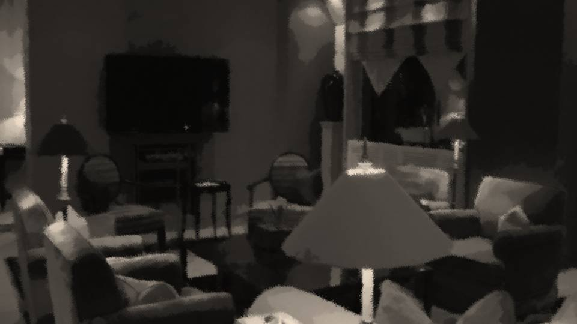

自責

私は全速力で自転車をこぎ続けた。
すれ違う人に顔を見られたくなかったからだ。
私は月明かりの下で泣きそうだった。
いや、すでに涙は流れていた。
すれ違う人に顔を見られたくなかったからだ。
私は月明かりの下で泣きそうだった。
いや、すでに涙は流れていた。
自転車をこぎながら、心の中で何度も新村先輩に謝った。


「私、なつみも大事だけど、五島のこともとても大事だ。だから、無茶はしないでくれよ」
「分かってますよ！ 信用して下さい！」
「分かってますよ！ 信用して下さい！」
新村先輩は私の身を案じて捜査をやめるよう言ってくれた。
私もそれに対して信用してと答えた。
私もそれに対して信用してと答えた。
でも、私はもう決めていたのだ。
古郡先輩を悲しませた犯人をどうしても許すことができない。
私は捜査をやめるつもりなんてなかった。
今なら、まだ行動を起こさずに騙さなかったことにできる。
古郡先輩を悲しませた犯人をどうしても許すことができない。
私は捜査をやめるつもりなんてなかった。
今なら、まだ行動を起こさずに騙さなかったことにできる。
それでも私はやめない。
ごめんなさい、私は嘘をつきました。
私は新村先輩を騙したんだ……。
これは軽い嘘なんかじゃないんだ。
ごめんなさい、私は嘘をつきました。
私は新村先輩を騙したんだ……。
これは軽い嘘なんかじゃないんだ。
新村先輩は私の身を心配してくれたのに、それを反故にしようとしている。
私は大事な人を騙すようなことはしないという信念を持っていた。
私は大事な人を騙すようなことはしないという信念を持っていた。

私は小さいころから勉強だけはできた。
小学校に入る前から、先生も親も天才天才って褒めてくれた。
勉強ができるといっても、特別なことをしてきたわけじゃない。
才能というやつなのだろうが、私は個性の1つだと思っている。
勉強ができるからって、別に鼻にかけるつもりもなかった。
小学校に入る前から、先生も親も天才天才って褒めてくれた。
勉強ができるといっても、特別なことをしてきたわけじゃない。
才能というやつなのだろうが、私は個性の1つだと思っている。
勉強ができるからって、別に鼻にかけるつもりもなかった。
でも、そんな私に近寄りがたかったのか、友達と呼べる人ができなかった。
テストでいい点とったり、先生に褒められたりするよりも、みんなの輪に入りたいという欲求の方が強かった。
テストの成績がみんなと同じくらいなら、みんなの輪に入ることができるのだろうか。
テストでいい点とったり、先生に褒められたりするよりも、みんなの輪に入りたいという欲求の方が強かった。
テストの成績がみんなと同じくらいなら、みんなの輪に入ることができるのだろうか。
私は1度、わざとテストで悪い点を取ったことがあった。
それは私にとっての悪い点で、平均よりちょっと上くらいの点数。
それは私にとっての悪い点で、平均よりちょっと上くらいの点数。

家に帰ってテストの点数を見せると、お母さんは悲しそうに眉間にしわを寄せた。
「絵梨奈、どうしたの？ 何か辛いことでもあった？ 何でも話して？」
状況は変わらなかった。
それどころか、お母さんを悲しませてしまったのだ。
「絵梨奈、どうしたの？ 何か辛いことでもあった？ 何でも話して？」
状況は変わらなかった。
それどころか、お母さんを悲しませてしまったのだ。
私は悪い点を取ることをやめ、次のテストではいつも通りの点数をとった。
お母さんはとても喜んでくれた。
その時、私の顔には自然にニカッとした笑顔が出ていた。
「あら絵梨奈、その笑顔、とてもいいわよ」
そっか、これだけでも印象ってずいぶん変わるものなのだな。
お母さんはとても喜んでくれた。
その時、私の顔には自然にニカッとした笑顔が出ていた。
「あら絵梨奈、その笑顔、とてもいいわよ」
そっか、これだけでも印象ってずいぶん変わるものなのだな。
あれ以来、私にはニカッと笑う癖がついていた。
すると不思議なことに、自然と私の周りにはクラスメイトが集まるようになっていた。
嬉しかった。とても嬉しかった。
だけど……。
すると不思議なことに、自然と私の周りにはクラスメイトが集まるようになっていた。
嬉しかった。とても嬉しかった。
だけど……。
それでも私の性格は変わらなかった。
自分から歩み寄るのは苦手で、どこか人と距離を置いていたのだ。
厳密に言えば、周りを信用しきれなかったのだと思う。
みんなは私の何を見てくれているのだろうか。
自分から歩み寄るのは苦手で、どこか人と距離を置いていたのだ。
厳密に言えば、周りを信用しきれなかったのだと思う。
みんなは私の何を見てくれているのだろうか。
もし笑顔だけなら、それはしょせんうわべだけのこと。
私という人格を受け入れてもらえないなら、また元に戻ってしまうかもしれない。
だから自分自身を周囲にさらけ出すことがどうしてもできなかった。
私という人格を受け入れてもらえないなら、また元に戻ってしまうかもしれない。
だから自分自身を周囲にさらけ出すことがどうしてもできなかった。
そう感じた決定的な理由は、みんなが私のことを「絵梨奈ちゃん」と呼んでいたことだ。
友達同士だと呼び捨てで呼び合ったり、変なあだ名で呼び合ったり、それが私に対しては全くなかったのだ。
わがままなのかもしれないが、妙に観察眼に優れていた私には、それが周囲との差を感じる要因となっていた。
友達同士だと呼び捨てで呼び合ったり、変なあだ名で呼び合ったり、それが私に対しては全くなかったのだ。
わがままなのかもしれないが、妙に観察眼に優れていた私には、それが周囲との差を感じる要因となっていた。
理由は分かっている。
いつしかついた「天才少女」という肩書と、その過大評価で、周囲との距離が広がってしまうのではないかと言う恐怖。
私にとって「天才少女」とは長所どころかコンプレックスだった。
でもそれをやめてしまうと、またお母さんを悲しませる。
いつしかついた「天才少女」という肩書と、その過大評価で、周囲との距離が広がってしまうのではないかと言う恐怖。
私にとって「天才少女」とは長所どころかコンプレックスだった。
でもそれをやめてしまうと、またお母さんを悲しませる。
そのような私の態度が周囲にも伝わったのだろう。
少しだけ話ができる人はできたけど友達と呼べるほどではなく、相変わらず私の性格は暗いままで、笑顔だけが独り歩きしていた。
少しだけ話ができる人はできたけど友達と呼べるほどではなく、相変わらず私の性格は暗いままで、笑顔だけが独り歩きしていた。
周囲に歩み寄ることもできず、引くこともできず、友達が欲しいという欲求と自分を見せるという不安、これらの葛藤の中で苦悶していた。

そして中学生になった私は、たまたま同じ部活になった古郡先輩に出会った。
「五島って言うんだ。よろしくね、五島！」
先輩たちですら「絵梨奈ちゃん」と呼んでいたのに、私のことを初めて呼び捨てで呼んだのはあの人だった。
先輩たちですら「絵梨奈ちゃん」と呼んでいたのに、私のことを初めて呼び捨てで呼んだのはあの人だった。
「天才少女？ うん、聞いたことあるよ。
ねえねえそれより五島、私の友達に春花っていう子がいるんだけど――」
「天才少女」と言う評判で身構える人とばかり触れ合ってきた私にとって、古郡先輩の態度は新鮮で壁を感じさせないものだった。
いつも同じ目線で構ってくれる古郡先輩に対して、私も少しずつ自分を見せられるようになっていた。
「天才少女」と言う評判で身構える人とばかり触れ合ってきた私にとって、古郡先輩の態度は新鮮で壁を感じさせないものだった。
いつも同じ目線で構ってくれる古郡先輩に対して、私も少しずつ自分を見せられるようになっていた。

そして古郡先輩を通じて知り合った新村先輩も。
「こいつが天才少女五島か！ へえ、すっげーチビなんだな！」
「チ……チビ……？」
「こいつが天才少女五島か！ へえ、すっげーチビなんだな！」
「チ……チビ……？」

「おいおい、お前ちゃんとご飯食ってるのか？ 脳みそばかりに栄養が行って成長止まってんじゃないのか？」
「ちゃ、ちゃんと食べてます……。 こう見えても私、 結構…… あの…… 大食いで……」
「ちゃ、ちゃんと食べてます……。 こう見えても私、 結構…… あの…… 大食いで……」

「え？ 何だって？ 声が小さくて聞こえないぞ！？」
「こ……これでも私大食いなんですー！！」
「こ……これでも私大食いなんですー！！」
「ほう！ よし、ここは出会った記念に先輩らしく、ザッハで何かおごってやろう！ 見せてみろよ、五島の大食いってやつをさ！」

「五島様……すみませんでした。もう勘弁して下さい……」
「五島すごーい！ 大食い大会出られるんじゃない！？」
「五島すごーい！ 大食い大会出られるんじゃない！？」
「くそ……今月の小遣いが……。

おい五島！ これだけごちそうしたんだから、私が暇なときは相手しろよ！」
「そうそう、春花は部活入ってないし結構暇人だよねー」
「なつみ……！ お前ら、もうちょっと年長者を敬えよ！」
「そうそう、春花は部活入ってないし結構暇人だよねー」
「なつみ……！ お前ら、もうちょっと年長者を敬えよ！」
「え？ 新村先輩って3年生なんですか！？ 全然落ち着きないですよね？」
「お……！ 言ってくれるじゃないか五島……！」
「お……！ 言ってくれるじゃないか五島……！」
こんな感じで何も意識しないうちに、自分をさらけ出す機会が増えていった。
私は今の自分がとても好き。
今まで知らなかった自分を発見できて、毎日が楽しい。
それを受け入れてくれる人たちがいて、とても楽しい。
私は今の自分がとても好き。
今まで知らなかった自分を発見できて、毎日が楽しい。
それを受け入れてくれる人たちがいて、とても楽しい。
私が今のようになれたのは、あの人のおかげ。
そして新村先輩と引き合わせてくれたのも、あの人のおかげ。
こういう人たちだけは騙すようなことはせず生きて行こう。
私はそう誓ったのだった。
そして新村先輩と引き合わせてくれたのも、あの人のおかげ。
こういう人たちだけは騙すようなことはせず生きて行こう。
私はそう誓ったのだった。
ごめんなさい……。ごめんなさい……！
今の私、きっと笑顔を覚える前の、あの孤独だったころの顔をしているのだろう。
今の私、きっと笑顔を覚える前の、あの孤独だったころの顔をしているのだろう。
私は月に向かって精一杯ニカッと笑って見せた。
大丈夫……きっと大丈夫。
また3人で、こうして笑顔で会える時が来る。
私はそのために、この道を選んだのだ。
大丈夫……きっと大丈夫。
また3人で、こうして笑顔で会える時が来る。
私はそのために、この道を選んだのだ。
私は自転車を力強くこいだ。
Read ✓ Next in this arc →